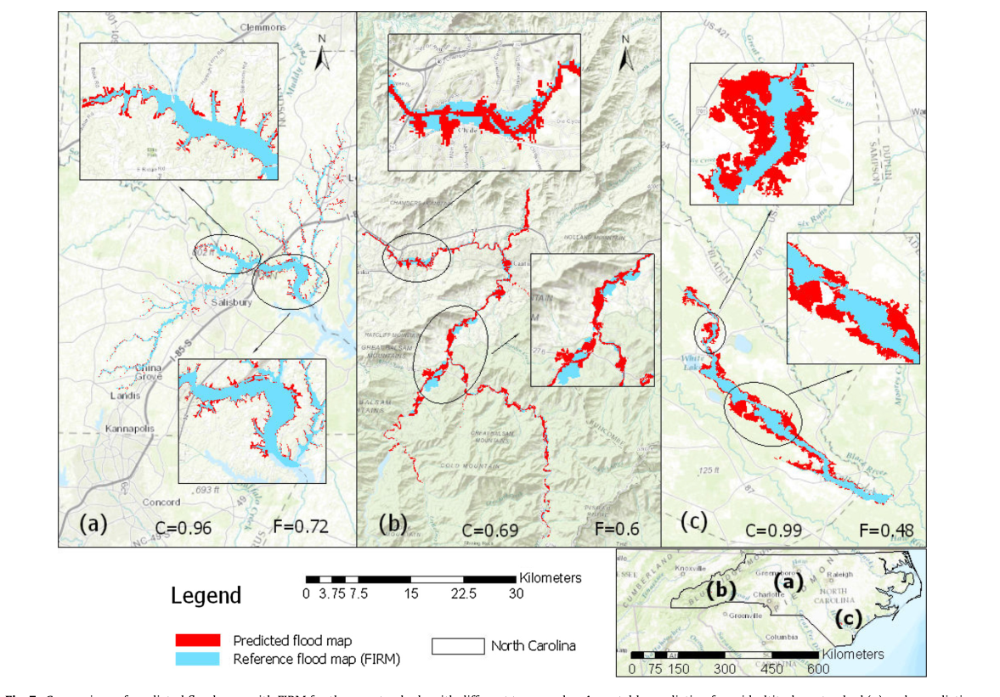
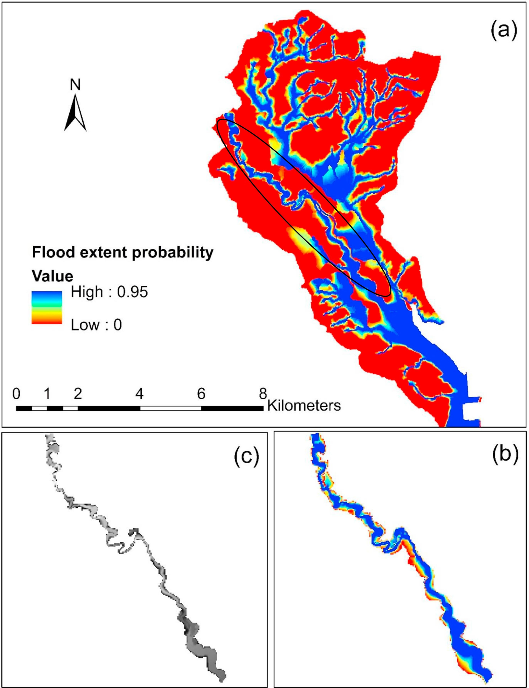
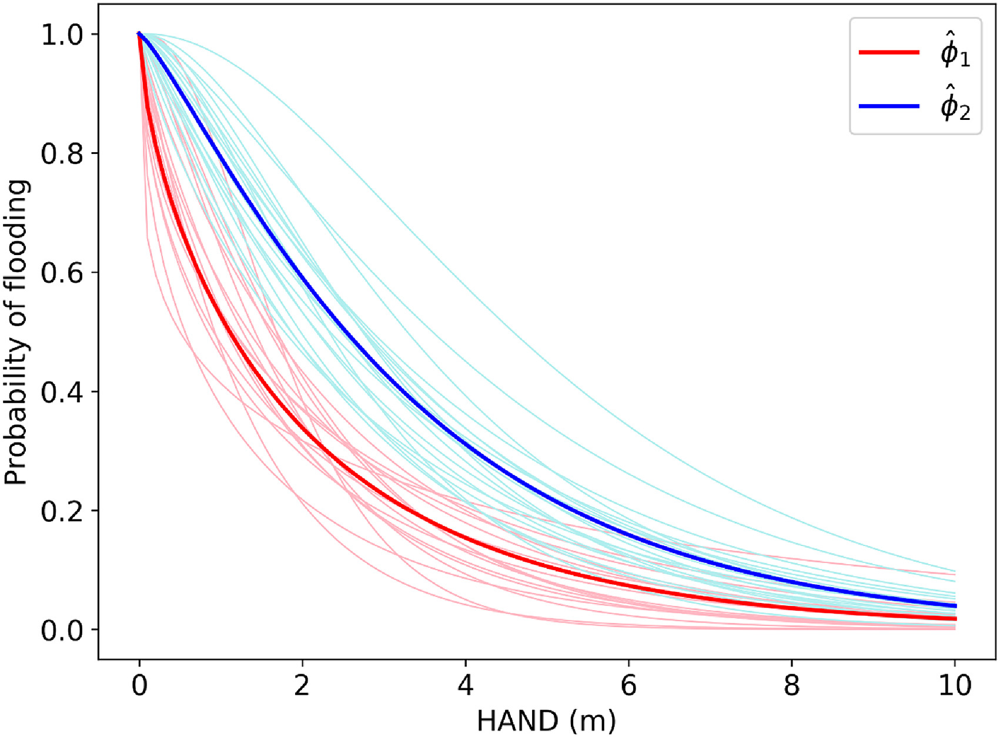
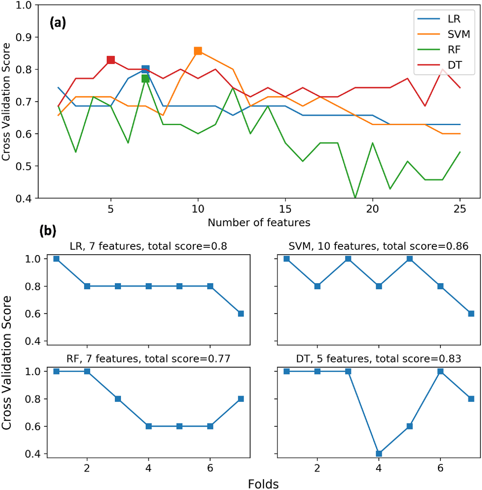
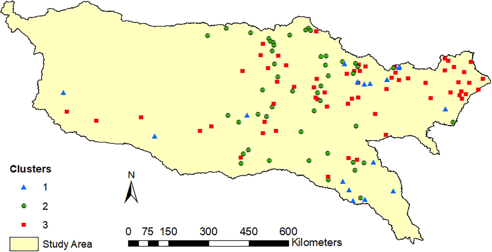
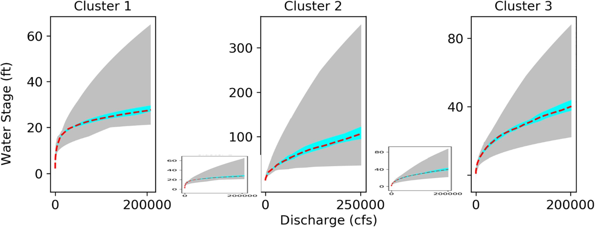
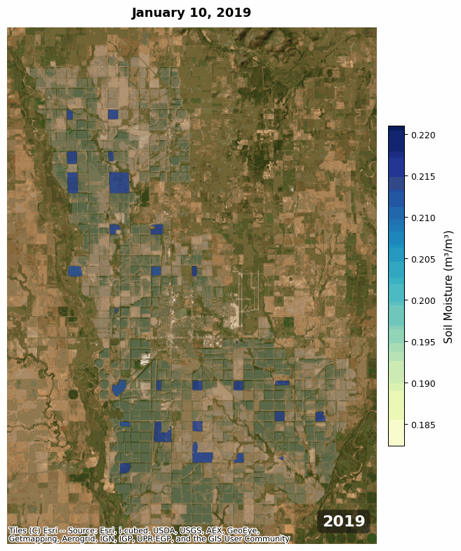
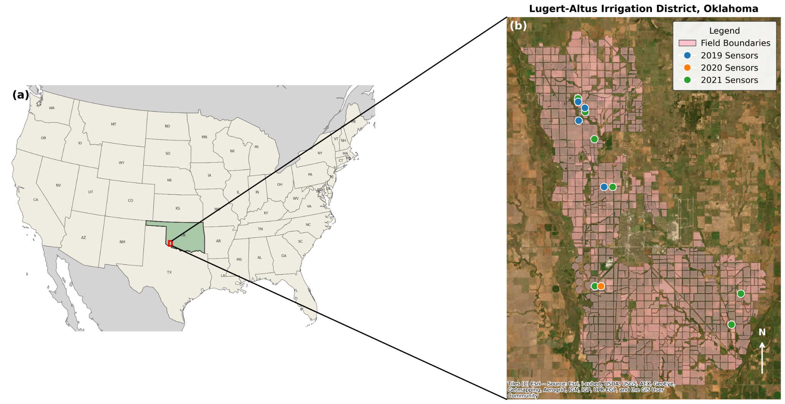

DEM-based floodplain mapping
Comparison of predicted floodplain extents with reference maps across contrasting terrain.
View publication ↗Advancing hydrologic understanding where observations are limited.
Our research addresses hydrologic prediction and mapping where direct observations are limited, spanning floodplain delineation, regionalization, and emerging soil moisture applications.
Published research on floodplain mapping in ungauged watersheds and across the United States.

Comparison of predicted floodplain extents with reference maps across contrasting terrain.
View publication ↗
Probabilistic floodplain mapping and river-reach comparisons.
View publication ↗Published studies on transferring hydrologic information across locations with limited observations.
Ongoing direction: streamflow prediction in ungauged basins.

Comparison of model-parameter patterns across watershed groups.

Evaluation of regional floodplain mapping models.

Spatial distribution of river-gauge clusters used in regionalization.

Regional rating curves across identified gauge clusters.
Ongoing research exploring soil moisture prediction in agricultural fields with limited in-situ observations.
Ongoing Research

Soil moisture conditions in the study area. Animation will be restored when the original multi-frame GIF is available.

Study area and field sensor locations in southwest Oklahoma.
Published figures are presented for research illustration. Confirm publisher reuse terms before public deployment.